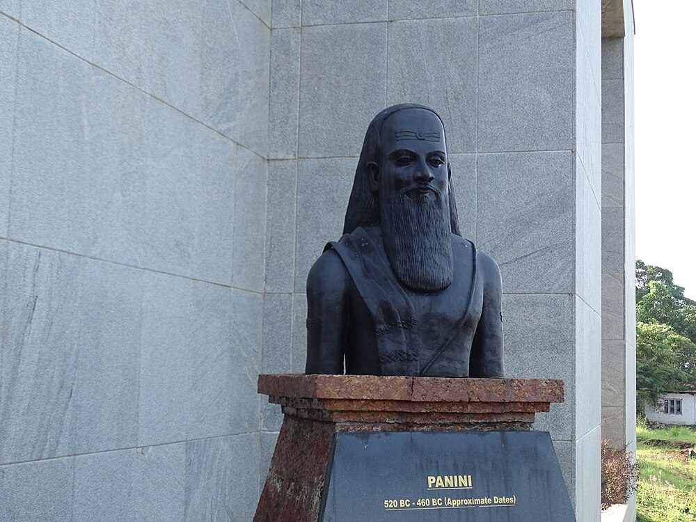
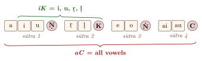
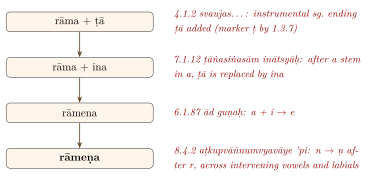
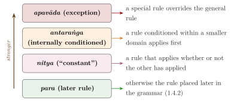

Chapter 5: Pāṇini’s Aṣṭādhyāyī¶
yenākṣarasamāmnāyam adhigamya maheśvarāt
kṛtsnaṃ vyākaraṇaṃ proktaṃ tasmai pāṇinaye namaḥ
Homage to Pāṇini, who received the list of sounds from Maheśvara and taught the whole of grammar.
— verse near the end of the Pāṇinīya Śikṣā (57)
5.1 Pāṇini: Place, Date and Legend¶
Pāṇini is the author of the Aṣṭādhyāyī (“Eight Chapters”), a grammar of Sanskrit in just under 4,000 short rules (sūtras). Counts of the rules in the received text vary slightly between editions, from about 3,959 to about 3,996; the figure most often quoted is 3,983 (Cardona 1997; Sharma 1987–2003). The grammar describes both the Vedic language and the spoken Sanskrit (bhāṣā) of educated speakers of Pāṇini’s own time, and derives its correct forms from roots, stems, suffixes and endings by an explicit system of ordered rules.
Almost nothing is known about Pāṇini’s life. Later tradition calls him Śālāturīya, “the man from Śalātura”, a place usually identified with the village of Lahor near Swabi in present-day Khyber Pakhtunkhwa, Pakistan; Patañjali refers to him as Dākṣīputra, “son of Dākṣī”. His grammar shows close knowledge of the geography, customs and dialects of the north-west and of the Gangetic plain (Agrawala 1953). His date can be fixed only relatively. He cites ten earlier grammarians by name (Āpiśali, Kāśyapa, Gārgya, Gālava, Cākravarmaṇa, Bhāradvāja, Śākaṭāyana, Śākalya, Senaka and Sphoṭāyana), he probably knew Yāska’s work or its sources, and he was commented on by Kātyāyana and then by Patañjali in the mid-2nd century BCE. His rule 4.1.49 provides for the feminine yavanānī (from yavana), which Kātyāyana explains as “the script of the Yavanas” (Greeks or, more broadly, westerners). Most scholars today place Pāṇini in the 4th century BCE; some argue for the 5th (Cardona 1976; Scharfe 1977). Older popular dates such as “520–460 BCE” (which appear, for instance, on modern statues) rest on no firm evidence (Figure 5.1).


5.1.1 Legends¶
A legend preserved in Somadeva’s Kathāsaritsāgara (11th century) makes Pāṇini a dull pupil of the teacher Varṣa who gained his grammar by the grace of Śiva. The Chinese pilgrim Xuanzang, who passed through Gandhāra in the 7th century, recorded the local tradition that Pāṇini had been born at Śalātura. The best-known legend, recorded in late texts, tells that at the end of his dance Śiva sounded his drum fourteen times and so produced the fourteen “Śiva-sūtras” or “Maheśvara-sūtras” with which the grammar begins (the epigraph above alludes to it). The stories show how highly the tradition valued Pāṇini and how firmly it tied grammar to the sacred.
5.2 The Components of the Grammar¶
The Pāṇinian system consists of several texts:
-
The Aṣṭādhyāyī itself: about 3,980 rules in eight chapters (adhyāya), each of four quarters (pāda), thirty-two quarters in all.
-
The Śivasūtras (Maheśvara-sūtras): fourteen strings of sounds from which abbreviations for sound classes are formed.
-
The Dhātupāṭha: a list of about 2,000 verbal roots in ten classes, with their meanings and grammatical markers (Section 5.11).
-
The Gaṇapāṭha: lists of words that undergo a given rule, cited in the rules by their first member followed by ādi (“and the rest”).
-
The Liṅgānuśāsana: rules for the gender of nouns.
The Uṇādisūtras, which derive words not covered by the regular rules, are not Pāṇini’s work; Pāṇini refers to the uṇādi suffixes as a class (3.3.1), but the surviving sūtra collection is later. The received text of all these works was fixed through the commentarial tradition, above all the Kāśikā (7th century), and a few rules may be later additions (Cardona 1997).
5.2.1 Predecessors and transmission¶
Pāṇini did not work in a vacuum. Besides the ten grammarians he names, later sources refer to other early schools, such as the Aindra grammar (“of Indra”) and the grammar of Kāśakṛtsna, and a few fragments attributed to Āpiśali survive in quotations. Much of Pāṇini’s technical vocabulary, including terms such as guṇa, vṛddhi, nipāta and the names of the cases, he seems to have inherited rather than invented, and some of his rules use terms that he never defines, presumably because his audience knew them. His grammar was so successful that it eclipsed its predecessors, none of which survives.
The Aṣṭādhyāyī itself contains no examples. It was learned by heart together with the oral explanations of a teacher, and the examples now printed with each rule come from the commentaries, above all the Kāśikā; many of them go back to Patañjali, and some perhaps to Pāṇini’s own teaching. Reading the rules without this tradition is extremely difficult, which is one reason why the commentaries became indispensable.
5.2.2 Speech and writing¶
Whether Pāṇini composed his grammar with the help of writing has been argued since the 19th century. The grammar itself shows that writing was known in his world. Rule 3.2.21 includes lipi and its variant libi among the words that form compounds such as lipikara “scribe”, and rule 4.1.49 provides for yavanānī, which Kātyāyana explains as the script of the Yavanas. Since Pāṇini lived in or near Gandhāra, then or recently under Achaemenid Persian rule, the writing he knew may have been the Aramaic of the Persian administration or an early form of Kharoṣṭhī (Section 12.3.2).
Knowing that writing exists is not the same as composing with it. Friedrich Max Müller held that writing played no part in the literary culture of Pāṇini’s time; Theodor Goldstücker replied that a work of such size and intricacy could hardly have been composed without it. The debate was renewed by Harry Falk and Oskar von Hinüber, who reviewed the evidence for early writing in India and concluded that Brāhmī was created only in the Maurya period and that writing, where it was known earlier, served practical rather than learned purposes (Falk 1993; Hinüber 1990). On this view the Aṣṭādhyāyī was composed, taught and handed down orally, like the Vedic texts whose phonetic science it inherited.
The grammar’s own conventions fit this view. Several of its devices depend on features of pronunciation that writing did not record. A nasalised vowel identifies a marker (1.3.2), and the continuation of a heading is signalled by the svarita accent (1.3.11, svaritenādhikāraḥ). Neither was marked in the manuscripts, so that later commentators had to rely on the teaching tradition to know which vowels Pāṇini had nasalised; a maxim says that the Pāṇinians know the nasality of a vowel “by declaration” (pratijñānunāsikyāḥ pāṇinīyāḥ). The economy of the rules, with words carried silently from one rule to the next, also suits a text learned by heart together with a teacher’s explanation. Some scholars still think that a written aid is likely for a work that cross-refers across nearly four thousand rules, and the question cannot be settled with certainty. What is clear is that the grammar was designed to be recited and memorised, and that it was transmitted in that way for centuries before it was written down (Scharfe 1977; Cardona 1997).
5.3 The Śivasūtras¶
The fourteen Śivasūtras list the sounds of Sanskrit in an order designed for the grammar, not in the order of the alphabet. Each string ends in a consonant used only as a marker (it or anubandha), printed here in capitals (Table 5.1).
| No. | Sūtra | Sounds listed (marker excluded) |
|---|---|---|
| 1 | a i u Ṇ | a, i, u |
| 2 | ṛ ḷ K | ṛ, ḷ |
| 3 | e o Ṅ | e, o |
| 4 | ai au C | ai, au |
| 5 | ha ya va ra Ṭ | h, y, v, r |
| 6 | la Ṇ | l |
| 7 | ña ma ṅa ṇa na M | the five nasals ñ, m, ṅ, ṇ, n |
| 8 | jha bha Ñ | jh, bh |
| 9 | gha ḍha dha Ṣ | gh, ḍh, dh |
| 10 | ja ba ga ḍa da Ś | j, b, g, ḍ, d |
| 11 | kha pha cha ṭha tha ca ṭa ta V | kh, ph, ch, ṭh, th, c, ṭ, t |
| 12 | ka pa Y | k, p |
| 13 | śa ṣa sa R | ś, ṣ, s |
| 14 | ha L | h (listed a second time) |
Two features stand out. The marker Ṇ is used twice (sūtras 1 and 6), so an abbreviation ending in ṇ can be ambiguous, and the grammar resolves the ambiguity from context. And h is listed twice (sūtras 5 and 14), so that it falls both within the class of voiced sounds and within the class of consonants that includes the sibilants. Long vowels are not listed separately: by rule 1.1.69 a vowel listed in the Śivasūtras stands for all its varieties of length, accent and nasality.
5.3.1 Abbreviations (pratyāhāra)¶
Rule 1.1.71 (ādir antyena sahetā) states that an initial sound together with a final marker denotes that sound and every sound in between. So aC (from a in sūtra 1 to the marker C of sūtra 4) means “all vowels”, haL (from ha in sūtra 5 to L in sūtra 14) means “all consonants”, and aL means “all sounds”. Some forty-odd such abbreviations are used in the grammar (Table 5.2 and Figure 5.2).
| Pratyāhāra | Range | Sounds designated |
|---|---|---|
| aC | sūtras 1–4 | all vowels: a, i, u, ṛ, ḷ, e, o, ai, au |
| iK | 1–2 | i, u, ṛ, ḷ |
| eṄ | 3 | e, o |
| eC | 3–4 | e, o, ai, au |
| aiC | 4 | ai, au |
| yaṆ | 5–6 | the semivowels y, v, r, l |
| haL | 5–14 | all consonants |
| yaR | 5–13 | all consonants except h |
| ñaM | 7 | the nasals |
| jhaL | 8–14 | obstruents: stops other than nasals, sibilants and h |
| jaŚ | 10 | voiced unaspirated stops j, b, g, ḍ, d |
| khaR | 11–13 | voiceless stops and sibilants |
| śaL | 13–14 | ś, ṣ, s, h |

5.3.2 Why this order?¶
The arrangement is not the traditional alphabetical order (the varṇasamāmnāya of the phonetic texts), which proceeds by place of articulation. It is arranged so that the classes of sounds to which Pāṇini’s rules refer can each be named by a single abbreviation. Thus the voiced stops (sūtras 8–10) come before the voiceless (11–12), and the aspirates before the unaspirated within each group. Modern scholars, among them Paul Kiparsky and Wiebke Petersen, have shown that the arrangement is close to the most economical one possible given the classes the grammar needs, while also noting the places (such as the double h) where the system is not optimal (Kiparsky 2009). The underlying idea is close to what modern phonologists call “natural classes”.
5.4 Structure of the Aṣṭādhyāyī¶
The eight chapters are not arranged by topic in the way a modern grammar is. Definitions and rules of interpretation come first, the suffixes occupy the central books, and the sound changes that apply last in a derivation are gathered at the end (Table 5.3); within this frame, the order of the rules is governed by the headings that each rule inherits from those before it.
| Adhyāya | Principal topics |
|---|---|
| 1 | Technical terms (saṃjñā) and rules of interpretation (paribhāṣā); the kārakas (1.4.23–55); the use of active and middle endings |
| 2 | Compounds (samāsa); the assignment of case endings to the kārakas and other relations (2.3); deletions of suffixes |
| 3 | Suffixes added to verbal roots: derivative roots, the verbal endings and tense-mood suffixes (lakāras), and the primary nominal suffixes (kṛt) |
| 4 | Feminine suffixes and the nominal case endings (4.1.1–2); secondary nominal suffixes (taddhita) begin at 4.1.76 |
| 5 | Secondary nominal suffixes continued |
| 6 | Reduplication, sandhi, accent and changes to stems |
| 7 | Replacement of suffixes, augments, vowel strengthening (guṇa, vṛddhi) and other stem changes |
| 8 | Repetition of words and sentence accent (8.1); the tripādī (8.2–8.4): final phonological rules, including much of external sandhi and retroflexion |
5.5 The Metalanguage¶
Pāṇini’s rules are written in a special form of Sanskrit with its own conventions. Understanding these conventions is the key to reading the grammar.
5.5.1 The sūtra style¶
A sūtra (literally “thread”) is a statement reduced to its bare essentials. Pāṇini’s rules usually contain no finite verb; they consist of a few nouns in particular cases, whose relations are fixed by the conventions described below, together with words carried over from earlier rules. A typical rule may consist of two or three words and be intelligible only in the light of the twenty rules before it. The style was designed for memorisation and oral teaching, in which the teacher supplied the missing context; it is economical for those who know the system and nearly impenetrable for those who do not. Much of the later literature on Pāṇini consists of making explicit what the sūtras leave implicit.
The principle of economy (lāghava)
Indian grammarians valued brevity above almost everything. A maxim quoted in Nāgeśa Bhaṭṭa’s Paribhāṣenduśekhara says that grammarians rejoice at the saving of half a mora as at the birth of a son (ardhamātrālāghavena putrotsavaṃ manyante vaiyākaraṇāḥ). The remark is ironic, but it captures a real methodological ideal: a description should state each generalisation once, in the fewest possible symbols. Pāṇini’s abbreviations, his headings that carry over into the following rules, and his technical markers, described below, all serve this end.
5.5.2 Technical terms (saṃjñā)¶
Some technical terms are defined by rules; others, such as guṇa and vṛddhi, are ordinary words given a technical sense. Table 5.4 gives a selection.
| Rule | Text | Content |
|---|---|---|
| 1.1.1 | vṛddhir ādaic | ā, ai and au are called vṛddhi |
| 1.1.2 | adeṅ guṇaḥ | a, e and o are called guṇa |
| 1.1.27 | sarvādīni sarvanāmāni | The words of the list beginning with sarva are pronouns |
| 1.1.37 | svarādinipātam avyayam | The list beginning with svar, and particles, are indeclinables |
| 1.1.45 | ig yaṇaḥ samprasāraṇam | An iK vowel replacing a semivowel is called samprasāraṇa |
| 1.1.68 | svaṃ rūpaṃ śabdasyāśabdasaṃjñā | A word in a rule stands for its own form, unless it is a technical term |
| 1.2.45 | arthavad adhātur apratyayaḥ prātipadikam | A meaningful form that is not a root or suffix is a nominal stem |
| 1.3.1 | bhūvādayo dhātavaḥ | The items of the list beginning with bhū are verbal roots |
| 1.4.14 | suptiṅantaṃ padam | A form ending in a nominal ending (sup) or verbal ending (tiṅ) is a word (pada) |
Rule 1.4.14 is worth noting: Pāṇini’s grammar does not use Yāska’s four word classes (noun, verb, preverb, particle; Chapter 4). For him a “word” is simply a form that ends in a nominal or a verbal ending.
5.5.3 Markers (it)¶
Many elements in the grammar carry marker sounds that are not pronounced but signal how the element behaves. Rules 1.3.2–1.3.8 define which sounds are markers, and 1.3.9 deletes them:
Aṣṭādhyāyī 1.3.2, 1.3.3, 1.3.9
1.3.2 upadeśe ’j anunāsika it 1.3.3 hal antyam 1.3.9 tasya lopaḥ
“1.3.2: In the original teaching, a nasalised vowel is a marker. 1.3.3: A final consonant is a marker. 1.3.9: A marker is deleted.”
So the suffix taught as ktvā (forming absolutives such as kṛtvā “having done”) carries the marker k, which blocks vowel strengthening in the root; the instrumental singular ending ṭā carries the marker ṭ.
5.5.4 Case endings in the metalanguage¶
Pāṇini uses the cases of the metalanguage in fixed senses. A word in the genitive denotes what is to be replaced (1.1.49 ṣaṣṭhī sthāneyogā); a word in the locative denotes the right-hand context (“before X”, 1.1.66); a word in the ablative denotes the left-hand context (“after X”, 1.1.67). Thus rule 6.1.77, iko yaṇ aci, is to be read: “in place of iK (genitive), yaṆ (nominative) is substituted, before aC (locative)”; that is, i, u, ṛ, ḷ become y, v, r, l before a vowel.
5.5.5 Recurrence and headings (anuvṛtti, adhikāra)¶
Words stated in one rule are understood to continue into the following rules until they are no longer needed. Some rules are pure headings that govern long sections: 3.1.1 pratyayaḥ (“[what follows is] a suffix”) governs the whole of Adhyāyas 3–5, and 3.1.91 dhātoḥ (“after a root”) governs the rest of Adhyāya 3. This device is one of the main sources of the grammar’s brevity, and one of the main difficulties in reading it.
5.6 Rule Types and Derivation¶
- saṃjñā
- rules that assign technical names (1.1.1).
- paribhāṣā
- rules on how other rules are to be interpreted (1.1.49, 1.1.66–67).
- vidhi
- operational rules that add, replace or delete elements (6.1.77).
- niyama
- restrictive rules that limit the scope of another rule.
- atideśa
- extension rules, which treat one thing as if it were another (for example 1.1.56, under which a substitute behaves like the original, sthānivadbhāva).
- adhikāra
- heading rules (3.1.1).
- pratiṣedha
- rules that block another rule in a given context.
5.6.1 Worked derivations¶
A derivation starts from a meaning to be expressed, chooses a root or stem and the appropriate suffixes, and then applies the operational rules until a finished word results (Figure 5.3).

The verb bhavati “becomes, is” is derived in a similar way. The root bhū receives the present-tense element laṭ (3.2.123 vartamāne laṭ), which is replaced by the third person singular active ending tip (3.4.78), leaving ti. The stem-forming suffix śap (3.1.68 kartari śap) is inserted, leaving a. The root vowel is strengthened to guṇa before it (7.3.84), giving bho + a + ti, and o becomes av before a vowel (6.1.78 eco ’yavāyāvaḥ): bhavati.
A third example shows how rules from different parts of the grammar cooperate, and why the order of the tripādī matters. The present gacchati “goes” begins, like bhavati, with the root gam, the element laṭ replaced by tip, and the stem suffix śap. Because śap carries the marker ś, rule 7.3.77 (iṣugamiyamāṃ chaḥ) applies: before such a suffix the final sound of gam is replaced by ch, giving ga-ch-a-ti. Rule 6.1.73 (che ca) then inserts the augment t (tuk) after a short vowel before ch: ga-t-ch-a-ti. Finally rule 8.4.40 (stoḥ ścunā ścuḥ), in the tripādī, replaces the dental t with the palatal c next to the palatal ch, and the result is gacchati. The assimilation is stated once, for every dental next to a palatal anywhere in the language, and because it stands in the tripādī it applies only after the forms on which it operates have been built.
5.7 The Kāraka Theory¶
Between the meaning of a sentence and its case endings Pāṇini interposes a level of six “factors of action” (kāraka), defined in rules 1.4.23–55 under the heading kārake. See Table 5.5.
| Kāraka | Rule | Usual case | Definition |
|---|---|---|---|
| apādāna | 1.4.24 | ablative | dhruvam apāye ’pādānam: the fixed point from which something moves away |
| sampradāna | 1.4.32 | dative | karmaṇā yam abhipraiti sa sampradānam: the one the agent aims at by means of the object (the recipient) |
| karaṇa | 1.4.42 | instrumental | sādhakatamaṃ karaṇam: the most effective means |
| adhikaraṇa | 1.4.45 | locative | ādhāro ’dhikaraṇam: the locus |
| karman | 1.4.49 | accusative | kartur īpsitatamaṃ karma: what the agent most wishes to reach |
| kartṛ | 1.4.54 | nominative or instrumental | svatantraḥ kartā: the independent participant, the agent |
The kārakas are not the same as the cases. The case endings that express them are assigned by separate rules in 2.3, which apply only when the kāraka has not already been expressed in another way (2.3.1 anabhihite). In an active sentence the verb ending expresses the agent, so the object takes the accusative; in a passive sentence the verb ending expresses the object, so the object takes the nominative and the agent the instrumental. The genitive is not assigned to any kāraka: it expresses “the remaining” relations (2.3.50 ṣaṣṭhī śeṣe), such as possession. Modern linguists have compared this separation of semantic roles from surface case marking to Fillmore’s “case grammar” and to theories of thematic roles; Cardona and Kiparsky discuss both the similarities and the differences (Cardona 1997; Kiparsky 2009).
5.7.1 Reading the kāraka section¶
The section on the kārakas shows how Pāṇini combines general definitions with special provisions. It is governed by the heading kārake (1.4.23), “with reference to a factor of action”, and by the rule ā kaḍārād ekā saṃjñā (1.4.1), which states that in this part of the grammar only one technical name applies to an item, the later-stated one prevailing when two could apply. Some rules of the section are listed in Table 5.6.
| Rule | Content | Example |
|---|---|---|
| 1.4.24 | The fixed point from which something departs is apādāna | grāmād āgacchati “he comes from the village” |
| 1.4.25 | With verbs of fearing, the source of fear is apādāna | corād bibheti “he fears the thief” |
| 1.4.32 | The one whom the agent aims at through the object is sampradāna | viprāya gāṃ dadāti “he gives a cow to the Brahmin” |
| 1.4.33 | With verbs meaning “to please”, the one pleased is sampradāna | haraye rocate bhaktiḥ “devotion pleases Hari” |
| 1.4.42 | The most effective means is karaṇa | dātreṇa lunāti “he reaps with a sickle” |
| 1.4.45 | The locus is adhikaraṇa | sthālyāṃ pacati “he cooks in a pot” |
| 1.4.46 | The place of lying, standing or sitting, after adhi, is karman | grāmam adhiśete “he lies in the village” |
| 1.4.49 | What the agent most wishes to reach is karman | kaṭaṃ karoti “he makes a mat” |
| 1.4.51 | A participant not otherwise specified is also karman | gāṃ dogdhi payaḥ “he milks milk from the cow” |
| 1.4.54 | The independent participant is kartṛ | devadattaḥ pacati “Devadatta cooks” |
| 1.4.55 | One who causes the agent to act is hetu as well as kartṛ | pācayati “he has (someone) cook” |
The pattern is typical: a general definition is followed by special rules for particular verbs or constructions, and the later rule takes precedence. The fear and pleasing rules, for example, extend apādāna and sampradāna to participants that are not literally points of departure or recipients, in order to account for the case endings that Sanskrit actually uses with these verbs. The ablative with “fear” and the dative with “please” are facts of usage; the grammar captures them by assigning the participants to the appropriate kāraka, so that the ordinary case-assignment rules of 2.3 can then apply without exception.
5.8 Conflict Between Rules¶
Many rules could in principle apply to the same form. Pāṇini states one general principle:
Aṣṭādhyāyī 1.4.2
vipratiṣedhe paraṃ kāryam
“When two rules conflict, the later one is to apply.”
How far this rule reaches, and what “later” (para) means in it, was debated from Kātyāyana and Patañjali onwards. The later tradition formulated a hierarchy of principles, summarised in the maxim pūrvaparanityāntaraṅgāpavādānām uttarottaraṃ balīyaḥ, which ranks the principles in order: of an earlier and a later rule, a “constant” (nitya) rule, an “internally conditioned” (antaraṅga) rule, and a special rule or exception (apavāda), each is stronger than the one before it. The principle that a special rule overrides the general rule it is an exception to is the most important; Kiparsky identified it with the “Elsewhere Condition” of modern phonology.
A simple example shows the principle at work. When kavi “poet” is joined to indra “Indra, lord”, two rules could apply to the meeting of i and i: rule 6.1.77 (iko yaṇ aci), which replaces i by y before any vowel and would give *kavyindra, and rule 6.1.101 (akaḥ savarṇe dīrghaḥ), which replaces two similar vowels by one long vowel and gives kavīndra. The second rule is both later in the grammar and more specific, since it applies only to similar vowels, while 6.1.77 applies before any vowel. On either principle it prevails, and the correct form is kavīndra. The general rule 6.1.77 is left to apply where the vowels are dissimilar, as in iti + ādi \(\rightarrow\) ityādi. Many of the commentators’ discussions concern cases in which the principles point in different directions, and much of the later literature on interpretive maxims grew out of the attempt to settle them consistently (Figure 5.4).

5.9 The Tripādī and the Principle of asiddha¶
The last three quarters of the grammar (8.2–8.4) form a special section, the tripādī, introduced by the rule:
Aṣṭādhyāyī 8.2.1
pūrvatrāsiddham
“[From here on, a rule is treated as] not having taken effect with respect to an earlier one.”
Within this section, a later rule is treated as invisible to the earlier rules, so the rules apply strictly in the order in which they are listed; and the whole section is treated as invisible to the rest of the grammar. The effect is a block of ordered, once-through phonological rules at the end of the derivation. Kiparsky and others have compared this to the ordered rules of generative phonology (Kiparsky 2009).
The final rule of the grammar, 8.4.68 a a, illustrates the system. Throughout the grammar the short vowel a is treated as an open (vivṛta) sound, so that it pairs with long ā. In actual pronunciation short a is closed (saṃvṛta), and the last rule restores this value. Because it stands in the tripādī, it is invisible to everything before it.
5.10 Sandhi in the Aṣṭādhyāyī¶
Most rules for the combination of sounds (sandhi) are in Adhyāya 6.1 and in the tripādī. The vowel rules are few and general. Rule 6.1.77 (iko yaṇ aci) replaces i, u, ṛ, ḷ by the corresponding semivowel before a dissimilar vowel (iti + ādi \(\rightarrow\) ityādi, madhu + ari \(\rightarrow\) madhvari); 6.1.87 (ād guṇaḥ) and 6.1.88 (vṛddhir eci) combine a or ā with a following vowel into a single vowel of the guṇa or vṛddhi grade (mahā + īśa \(\rightarrow\) maheśa, mahā + aiśvarya \(\rightarrow\) mahaiśvarya); 6.1.109 (eṅaḥ padāntād ati) drops an initial a after a word-final e or o (vane ’tra); and 6.1.101 merges two homogeneous vowels into one long vowel. The vowel, consonant and visarga rules are set out with examples in Chapter 6 (Table 6.1).
Aṣṭādhyāyī 6.1.101
akaḥ savarṇe dīrghaḥ
“In place of an aK vowel (a, i, u, ṛ, ḷ) together with a following homogeneous vowel, a single long vowel is substituted.”
5.11 The Dhātupāṭha¶
The list of roots arranges about 2,000 roots in ten classes (gaṇa), named after the first root of each class, according to how they form the present stem. Each root is listed with its meaning, given in the locative (bhū sattāyām “bhū in the sense of being”). See Table 5.7.
| Class | Name | Root and meaning | Present (3rd sg.) |
|---|---|---|---|
| I | bhvādi | bhū “be” | bhavati |
| II | adādi | ad “eat” | atti |
| III | juhotyādi | hu “offer” | juhoti |
| IV | divādi | div “play” | dīvyati |
| V | svādi | su “press (Soma)” | sunoti |
| VI | tudādi | tud “strike” | tudati |
| VII | rudhādi | rudh “obstruct” | ruṇaddhi |
| VIII | tanādi | tan “stretch” | tanoti |
| IX | kryādi | krī “buy” | krīṇāti |
| X | curādi | cur “steal” | corayati |
The markers attached to roots in the Dhātupāṭha encode further information: for example, a root taught with an unaccented marker vowel or a marker ṅ takes only the middle (ātmanepada) endings (1.3.12), and one with a marker ñ takes middle endings when the fruit of the action goes to the agent (1.3.72). The root “to do, make”, for example, is listed as ḍukṛñ karaṇe. Stripped of its markers it is simply kṛ; the final ñ shows that it takes either set of endings (karoti, kurute); and the initial ḍu entitles it to the suffix ktri (3.3.88), which, extended by -ma (4.4.20), gives kṛtrima “made, artificial”. The Dhātupāṭha thus works like a structured lexicon. Its meaning-glosses may be later additions; Patañjali does not discuss them.
5.12 The Gaṇapāṭha and the Uṇādisūtras¶
When a rule names a word followed by ādi (“and the others”), the full list is given in the Gaṇapāṭha. Examples are the sarvādi list of pronouns (1.1.27), the svarādi list of indeclinables (1.1.37), the gargādi list of names that form patronymics with the suffix yañ (4.1.105, garga \(\rightarrow\) gārgya), and the śivādi list that forms patronymics with aṇ (4.1.112). Some lists are closed; others are marked as open (ākṛtigaṇa), and later grammarians added to them.
The Uṇādisūtras take their name from their first suffix, uṇ, which forms words such as kāru “artisan”, vāyu “wind” and sādhu “good”. They provide derivations for many common words whose formation the main grammar does not cover, often in an artificial way. The grammarians themselves debated whether such words should be derived at all or simply listed as underived; the tradition records that Śākaṭāyana held all nouns to be derived from verbs, while Gārgya and others disagreed (Chapter 4).
5.13 Variation, Region and Vedic Usage¶
The Aṣṭādhyāyī is not a rigidly prescriptive grammar. Many of its rules are optional, marked by vā, vibhāṣā or anyatarasyām, and Paul Kiparsky has argued that these words distinguish degrees of preference among variant forms (Kiparsky 1979). Pāṇini cites the usage of “northerners” (udīcām) and “easterners” (prācām), and the opinions of earlier grammarians, as sources of variation. Vedic forms are covered by special rules, often with the qualification chandasi (“in the Vedic texts”) or bahulam (“variously”), and the Vedic accent is described in detail. The grammar thus records a language with regional and stylistic variation, and its author was a careful observer of usage (Deshpande 1993; Cardona 1997).
Pāṇini also gives a complete account of the Vedic pitch accent. A basic rule (6.1.158, anudāttaṃ padam ekavarjam) states that in a word every vowel is unaccented except one, so that the grammar needs only to determine which syllable bears the high pitch; a long series of rules, mostly in 6.1 and 6.2, then assigns the accent according to the root, the suffixes and the type of compound, while rules in 8.1 and 8.4 deal with the accent of words in the sentence and the dependent svarita. Accent is the place where the grammar’s concern with the Vedic texts is most evident, and where its rules are most closely connected with the phonetic analysis of the Prātiśākhyas (Chapter 2). For the classical language, which had lost the pitch accent, these rules became largely theoretical, and the later teaching tradition often passed over them.
5.14 The World of the Grammar¶
Because Pāṇini had to account for words of every kind, including names of places, peoples, clans and products, his rules and the word-lists attached to them form a valuable source for the geography and society of northern India in his time. V. S. Agrawala’s India as Known to Pāṇini collected this material (Agrawala 1953). Pāṇini knows the north-west intimately: he refers to the Sindhu and its tributaries, to Gandhāra and to Takṣaśilā, and a famous rule (4.2.74) concerns the names of wells to the north of the river Vipāś (the modern Beas), a distinction so local that it has often been taken as evidence of the grammarian’s own familiarity with the region. He also knows the peoples of the Gangetic plain and of the east, the political units called janapadas and the oligarchic republics (saṅghas) of the period, trades and crafts, coins and measures, and the social terms of varṇa, lineage (gotra) and kinship. Such evidence must be used with care, since the date of individual rules and of the word-lists is uncertain; but taken together it gives a vivid picture of the world in which Sanskrit was spoken.
5.15 The Commentarial Tradition¶
Because the Aṣṭādhyāyī is so concise, almost everything that later readers knew of it came to them through commentary. The tradition grew in two directions (Table 5.8). One line explained the rules in their own order, from the Kāśikā of the 7th century to its sub-commentaries; another, beginning with Rāmacandra’s Prakriyākaumudī, rearranged them by topic so that a student could follow the derivation of a form from start to finish. Nāgeśa Bhaṭṭa, around 1700, brought the interpretive and philosophical discussion of the whole tradition to a close.
| Work | Author | Date | Character |
|---|---|---|---|
| Vārttikas | Kātyāyana | c. 3rd c. BCE | Critical notes on Pāṇini’s rules |
| Mahābhāṣya | Patañjali | mid-2nd c. BCE | Discussion of Pāṇini and Kātyāyana |
| Kāśikā | Jayāditya and Vāmana | 7th c. | Rule-by-rule commentary with examples |
| Nyāsa | Jinendrabuddhi | 8th c. | Buddhist sub-commentary on the Kāśikā |
| Pradīpa | Kaiyaṭa | 11th c. | Sub-commentary on the Mahābhāṣya |
| Padamañjarī | Haradatta | 11th–13th c. | Sub-commentary on the Kāśikā |
| Prakriyākaumudī | Rāmacandra | c. 15th c. | Rules rearranged by topic |
| Siddhāntakaumudī | Bhaṭṭoji Dīkṣita | early 17th c. | The standard topical rearrangement |
| Prauḍhamanoramā | Bhaṭṭoji Dīkṣita | early 17th c. | Bhaṭṭoji’s own commentary on the Siddhāntakaumudī |
| Laghusiddhāntakaumudī | Varadarāja | 17th c. | Abridgement for beginners |
| Laghuśabdenduśekhara | Nāgeśa Bhaṭṭa | c. 1700 | Commentary on the Siddhāntakaumudī |
| Paribhāṣenduśekhara | Nāgeśa Bhaṭṭa | c. 1700 | Systematic treatment of the interpretive maxims |
| Uddyota | Nāgeśa Bhaṭṭa | c. 1700 | Sub-commentary on Kaiyaṭa’s Pradīpa |
| Tattvabodhinī | Jñānendra Sarasvatī | 17th–18th c. | Commentary on the Siddhāntakaumudī |
| Bālamanoramā | Vāsudeva Dīkṣita | 18th c. | Commentary on the Siddhāntakaumudī |
Scholarly Note: The Siddhāntakaumudī
Pāṇini’s order of rules is designed for economy of statement, not for learning. Bhaṭṭoji Dīkṣita’s Siddhāntakaumudī (early 17th century) rearranged the rules by topic, so that everything needed to derive, say, the declension of nouns in -a, or the forms of a particular verb class, is presented together, with worked derivations (prakriyā). It became, with Varadarāja’s abridgements, the standard textbook of traditional Sanskrit education. Critics have pointed out that this method trains students to derive forms without grasping the architecture of the original grammar.
5.16 Grammars outside the Pāṇinian School¶
Pāṇini’s grammar was never the only grammar of Sanskrit. Between the early centuries CE and the 16th century at least a dozen independent systems were composed (Table 5.9). Almost all of them take over Pāṇini’s analysis of the language, its roots, suffixes and derivational steps. What they change is the arrangement, the technical terms and the scope, and the reasons show what users of a grammar wanted that the Aṣṭādhyāyī did not supply (Scharfe 1977; Cardona 1976). Pāṇini orders his rules for economy of statement, so that a single form may need rules from all eight books; a beginner, and especially an adult learner, wanted the rules grouped by topic. Pāṇini includes the Vedic forms and the rules of accent, which were of no use to Buddhists, to Jains or to the many students who needed only the classical language. And a Buddhist or Jain community, or a royal court, could claim intellectual standing by possessing a grammar of its own, with its own examples.
| School | Founder | Date | Character |
|---|---|---|---|
| Pāṇinian | Pāṇini | c. 4th c. BCE | The dominant system; extended by Kātyāyana and Patañjali |
| Kātantra | Śarvavarman | early centuries CE | Short, practical grammar; popular in Bengal, Kashmir and among Buddhists in Tibet |
| Cāndra | Candragomin | 5th c. | Pāṇinian rules recast without Vedic material and accent |
| Jainendra | Pūjyapāda Devanandin | 5th–6th c. | Jain grammar with its own technical terms |
| Śākaṭāyana | Pālyakīrti | 9th c. | Jain grammar; its author is not the pre-Pāṇinian Śākaṭāyana |
| Haima | Hemacandra | 12th c. | Sanskrit, Prakrit and Apabhraṃśa together |
| Mugdhabodha | Vopadeva | 13th c. | Concise grammar, popular in Bengal |
| Sārasvata | attributed to Anubhūtisvarūpācārya | c. 13th–14th c. | Simplified grammar, widely used in western and northern India |
| Saṃkṣiptasāra | Kramadīśvara | c. 13th c. | Concise grammar with a section on Prakrit |
5.16.1 The Kātantra¶
The oldest and most widely used of the rival grammars is the Kātantra, also called Kalāpa or Kaumāra, attributed to Śarvavarman and probably composed in the early centuries CE. Somadeva’s Kathāsaritsāgara (11th century) tells a story about its origin. A Sātavāhana king was mocked by his queen for failing to understand her Sanskrit. Playing in the water, she asked him not to splash her, joining mā udakaiḥ (“not with water”) by sandhi into modakaiḥ. He took this for modakaiḥ “with sweets” and had sweets brought. He then demanded to learn grammar quickly, and Śarvavarman taught him in six months with a grammar revealed by the god Kumāra. The story captures the work’s purpose. The Kātantra is short, omits the Vedic language, and is arranged by topic, treating sandhi first, then nouns, case relations, compounds and secondary derivatives, and then the verb; a section on primary (kṛt) derivatives was added later. Its technical terms are partly older than Pāṇini’s and close to those of the Prātiśākhyas, such as samāna for the simple vowels. The commentary of Durgasiṃha became standard. The Kātantra was studied in Kashmir and in Bengal, where a Kalāpa school survived into the 20th century. Fragments have been found in Central Asia, and it was translated into Tibetan and became a foundation of grammatical study in Tibet (Section 14.2.1). It also served as a model for the earliest Pali grammar (Chapter 9).
5.16.2 Buddhist and Jain grammars¶
The Cāndravyākaraṇa of the Buddhist Candragomin (probably 5th century) is a thorough recasting of Pāṇini in six chapters of a little over three thousand rules. It leaves out the Vedic and accent rules, simplifies the technical apparatus, and draws on Kātyāyana’s and Patañjali’s corrections. The tradition describes it as a grammar “without technical terms” (asaṃjñaka), an exaggeration that points to its effort to dispense with many of Pāṇini’s arbitrary labels. It was influential in Kashmir, Nepal, Tibet and Sri Lanka, where the Pali grammarian Moggallāna drew on it. It then disappeared from India. The text was recovered in the 20th century from Nepalese and Tibetan sources.
The Jains produced several grammars. The Jainendravyākaraṇa of Pūjyapāda Devanandin (5th–6th century) survives in two recensions, a shorter one of about three thousand rules and a longer one, and is known for pushing Pāṇini’s economy of statement still further, with even shorter technical terms. The Śabdānuśāsana of the Yāpanīya Jain Pālyakīrti (9th century), who is also called Śākaṭāyana, was written under the Rāṣṭrakūṭa king Amoghavarṣa I, after whom its commentary, the Amoghavṛtti, is named. Its examples are drawn from Jain life and doctrine instead of Brahmanical ritual. Its author must not be confused with the much older Śākaṭāyana whom Yāska and Pāṇini cite (Chapter 4).
5.16.3 Royal grammars: Bhoja and Hemacandra¶
In the 11th and 12th centuries grammar became a matter of royal prestige in western India. The Paramāra king Bhoja of Dhārā is credited with a grammar called Sarasvatīkaṇṭhābharaṇa. It absorbs into a single body of sūtras much that the Pāṇinian school kept in separate texts: Kātyāyana’s additions, the word-lists and the uṇādi suffixes. According to the Jain chronicles, when the Caulukya king Siddharāja Jayasiṃha of Gujarat captured the library of Dhārā, he resolved that Gujarat must have a grammar of its own. The result was Hemacandra’s Siddhahemaśabdānuśāsana, named after both king and author, whose eighth and last chapter, on the Prakrits and Apabhraṃśa, is described in Chapter 9. The story is told in later sources and may be embellished. The grammar itself is a complete system in about 4,700 rules. Hemacandra supplied every ancillary part himself: a root-list, a list of nominal stems, the uṇādi suffixes, a treatise on gender, and commentaries of several lengths. Few Indian grammarians produced so complete an apparatus single-handed.
5.16.4 Later teaching grammars¶
The later rival grammars were mostly teaching grammars for particular regions. The Sārasvata, a short grammar of about seven hundred rules ascribed to Anubhūtisvarūpācārya (c. 13th–14th century), was widely used in western and northern India and attracted many commentaries. Vopadeva’s Mugdhabodha, written in the 13th century in the Yādava kingdom of Devagiri, replaced Pāṇini’s technical terms with new and very brief ones and became the leading grammar of Bengal, where the Saṃkṣiptasāra of Kramadīśvara, revised by Jumaranandin, and the Supadma of Padmanābhadatta (14th century) were also studied. In the 16th century the Vaiṣṇava theologian Jīva Gosvāmin composed the Harināmāmṛta, a grammar in which the technical terms are names of Kṛṣṇa, so that a student reciting its rules constantly uttered the names of God and grammar itself became an act of devotion. In Bengal these schools continued in the traditional ṭols into the 20th century. Elsewhere the Siddhāntakaumudī, which gave Pāṇini’s own rules the topical arrangement that had been the rivals’ main advantage, restored the dominance of the Pāṇinian school from the 17th century onwards.
5.17 How the Grammar Was Taught¶
For more than two thousand years Pāṇinian grammar was taught orally, in a pattern that changed only slowly. A student first memorised the Śivasūtras, the rules of the Aṣṭādhyāyī and the Dhātupāṭha, often before understanding them; the meaning was then expounded by the teacher, rule by rule, with examples and derivations. From the 17th century the usual path ran through Varadarāja’s Laghusiddhāntakaumudī to Bhaṭṭoji Dīkṣita’s Siddhāntakaumudī and its commentaries, and then to the Mahābhāṣya and the works of Nāgeśa on the interpretive principles and the philosophy of grammar. Proficiency was tested in debate (śāstrārtha) with other scholars.
Grammar was also taught through poetry. Bhaṭṭi, who wrote at Valabhī in Gujarat under a king named Śrīdharasena in the 6th or 7th century, composed the Bhaṭṭikāvya, also called the Rāvaṇavadha (“The Killing of Rāvaṇa”), a poem in twenty-two cantos that tells the story of Rāma while illustrating the rules of Pāṇini. Its first part gathers examples of miscellaneous rules; the second follows particular sections of the grammar in order; the third illustrates the figures of speech; and the last works through the tenses and moods of the verb, canto by canto. In his closing verses Bhaṭṭi compares his poem to a lamp, useful to those whose eye is grammar and of no use to those who lack it (Fallon 2009). The genre that he founded, the śāstrakāvya or poem written in the service of a science, had a long life. Bhaumaka’s Rāvaṇārjunīya illustrates the rules of the Aṣṭādhyāyī in their own order. Hemacandra’s Dvyāśrayakāvya tells the history of the Caulukya kings of Gujarat while exemplifying his own grammar, and ends with a Prakrit poem that illustrates its Prakrit chapter. In Kerala, Nārāyaṇa Bhaṭṭa’s Dhātukāvya (16th–17th century) works through the roots of the Dhātupāṭha in the course of a story of Kṛṣṇa. Such poems let students meet the forms of the grammar in connected, memorable verse, and they show how closely grammar and literature were bound together.
The course was long. The Pañcatantra opens with a king who is told that grammar alone takes twelve years to learn (Chapter 14), and the traditional curriculum did indeed occupy many years. Such training produced scholars of extraordinary command of the language and its rules, but it was also exclusive: it presupposed years of leisure and, in most traditional schools, admission only to young men of the upper castes (Chapter 7). In the 19th and 20th centuries Sanskrit colleges, universities and modern textbooks opened the subject to wider groups of students, and European and Indian scholars wrote grammars of Sanskrit on modern lines that do not require prior memorisation of Pāṇini.
5.18 Pāṇini’s Achievement in Perspective¶
The American linguist Leonard Bloomfield, writing in 1933, called Pāṇini’s grammar “one of the greatest monuments of human intelligence” and praised its description of “every inflection, derivation, and composition” of its author’s speech (Bloomfield 1933, 11). What modern specialists admire is the combination described in this chapter: a defined metalanguage of abbreviations, markers and conventions of interpretation; ordered, interacting rules with explicit principles for settling their conflicts; a level of semantic-syntactic relations, the kārakas, between meaning and form; the treatment of variation through optional rules; and a concision achieved through headings, recurrence and abbreviation.
Comparisons with modern generative grammar, formal language theory and computer science are discussed in Chapter 14. Such comparisons should be made with care. Pāṇini’s grammar was designed to derive the correct forms of one language for a learned audience trained in a living oral tradition; it presupposes the knowledge of meaning that its users already had, and it does not aim at a theory of universal grammar (Table 5.10).
| Scholar | Work |
|---|---|
| Otto Böhtlingk | First European edition (1839–40), revised with a German translation (Böhtlingk 1887) |
| Srisa Chandra Vasu | English translation of the Aṣṭādhyāyī (Allahabad, 1891–98) (Vasu 1891–1898) |
| J. F. Staal (ed.) | A Reader on the Sanskrit Grammarians (Staal 1972) |
| George Cardona | Pāṇini: A Survey of Research (Cardona 1976); Pāṇini: His Work and its Traditions (Cardona 1997) |
| Paul Kiparsky | Pāṇini as a Variationist (Kiparsky 1979); “On the Architecture of Pāṇini’s Grammar” (Kiparsky 2009) |
| S. M. Katre | Text and translation (Katre 1987) |
| Rama Nath Sharma | Six-volume translation and commentary (Sharma 1987–2003) |
| S. D. Joshi and J. A. F. Roodbergen | Translations of the Mahābhāṣya and the Aṣṭādhyāyī, with notes (Joshi and Roodbergen 1986) |
Further Reading¶
-
Cardona, George. 1997. Pāṇini: His Work and Its Traditions. 2nd ed. 1: Background and Introduction. Motilal Banarsidass.. — The fullest modern introduction to Pāṇini’s system.
-
Cardona, George. 1976. Pāṇini: A Survey of Research. Trends in Linguistics, State-of-the-Art Reports 6. Mouton.. — A survey of research to the mid-1970s.
-
Katre, Sumitra M. 1987. Aṣṭādhyāyī of Pāṇini. University of Texas Press.. — Text and translation of the rules.
-
Sharma, Rama Nath. 1987–2003. The Aṣṭādhyāyī of Pāṇini. 6 vols. Munshiram Manoharlal.. — Translation with detailed commentary.
-
Kiparsky, Paul. 2009. “On the Architecture of Pāṇini’s Grammar.” In Sanskrit Computational Linguistics: First and Second International Symposia, edited by Gérard Huet, Amba Kulkarni, and Peter Scharf. Lecture Notes in Computer Science 5402. Springer.. — On the architecture of the grammar and its rule interactions.
-
Cardona, George. 1999. Recent Research in Pāṇinian Studies. Motilal Banarsidass.. — A survey of research since the mid-1970s, continuing Cardona (1976).
-
Abhyankar, K. V. 1961. A Dictionary of Sanskrit Grammar. Gaekwad’s Oriental Series 134. Oriental Institute.. — A dictionary of the technical terms of Sanskrit grammar.